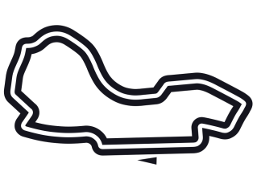
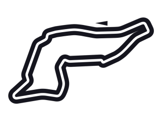

CALENDARIO
| Round | Fechas | Pais | Circuito | TOP 3 | 1 | 10-20 MAR | BAREIN |

DISTANCIA: 5.412km RECORD VUELTA RAPIDA: 1:31:447 (de la Rosa 2005) |
LEC-SAI-HAM | 2 | 25-27 MAR | ARABIA SAUDITA |
DISTANCIA: 6.174km VUELTA RAPIDA: 1:30.734 (Hamilton 2021) |
VER-LEC-SAI | 3 | 08-10 ABR | AUSTRALIA |

DISTANCIA: 5.278km VUELTA RAPIDA: 1:20.260 (Leclerc 2022) |
LEC-PER-RUS | 4 | 22-24 ABR | ITALIA |

DISTANCIA: 4.909km VUELTA RAPIDA: 1:15.484 (Hamilton 2020) |
VER-PER-NOR | 5 | 06-08 MAY | USA |
DISTANCIA: 5.412km VUELTA RAPIDA: 1:31.361 (Verstappen 2022) |
VER-LEC-SAI | 6 | 20-22 MAY | ESPAÑA |
DISTANCIA: 4.675km VUELTA RAPIDA: 1:18.149 (Verstappen 2021) |
VER-PER-RUS | 7 | 27-29 MAY | MONACO |
DISTANCIA: 3.337km VUELTA RAPIDA: 1:12.909 (Hamilton 2021) |
PER-SAI-VER | 8 | 10-12 JUN | AZERBAYAN |
DISTANCIA: 6.003km VUELTA RAPIDA: 1:43.009 (Leclerc 2019) |
VER-PER-RUS | 1 | 17-19 JUN | CANADA |

DISTANCIA: 4.361km VUELTA RAPIDA: 1:13.078 (Bottas 2019) |
VER-SAI-HAM | 10 | 01-03 JUL | GRAN BRETAÑA |
DISTANCIA: 5.891km VUELTA RAPIDA: 1:27.097 (Verstappen 2020) |
SAI-PER-HAM | 11 | 08-11 JUL | AUSTRIA |

DISTANCIA: 4..318km VUELTA RAPIDA: 1:05.619 (Sainz 2020) |
LEC-VER-HAM | 12 | 22-24 JUL | FRANCIA |
DISTANCIA: 5.842km VUELTA RAPIDA: 1:32.740 (Vettel 2019) |
N/A | 13 | 29-31 JUL | HUNGRIA |

DISTANCIA: 4.381km VUELTA RAPIDA: 1:16.627 (Hamilton 2020) |
N/A | 14 | 26-28 AGO | BELGICA |
DISTANCIA: 7.004km VUELTA RAPIDA: 1:46.286 (Bottas 2018) |
N/A | 15 | 01-04 SEP | PAISES BAJOS |

DISTANCIA: 4.259km VUELTA RAPIDA: 1:11.097 (Hamilton 2021) |
N/A | 16 | 09-11 SEP | ITALIA |
DISTANCIA: 5.793km VUELTA RAPIDA: 1:21.046 (Barrichello 2004) |
N/A | 17 | 30 SEP-01 OCT | SINGAPUR |
DISTANCIA: 5.063km VUELTA RAPIDA: 1:41.905 (Magnussen 2018) |
N/A | 18 | 07/09 OCT | JAPON |

DISTANCIA: 5.807km VUELTA RAPIDA: 1:30.983 (Hamilton 2019) |
N/A | 19 | 21-23 OCT | USA |
DISTANCIA: 5.513km VUELTA RAPIDA: 1:36.169 (Leclerc 2019) |
N/A | 20 | 28-30 OCT | MEXICO |
DISTANCIA: 4.304km VUELTA RAPIDA: 1:17.774 (Bottas 2021) |
N/A | 21 | 11-13 NOV | BRASIL |
DISTANCIA: 4.309km VUELTA RAPIDA: 1:10.540 (Bottas 2018) |
N/A | 22 | 18-20 NOV | ABU DHABI |
DISTANCIA: 5.281km VUELTA RAPIDA: 1:26.103 (Verstappen 2021) |
N/A |
|---|